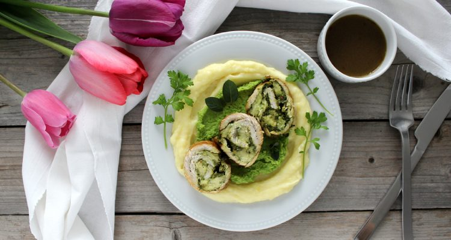
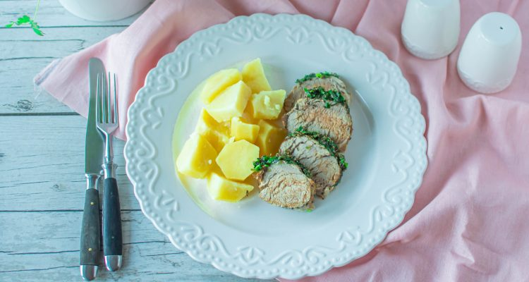
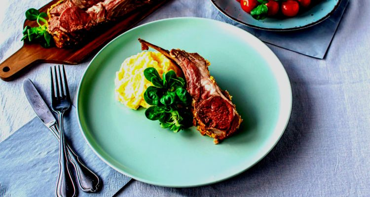
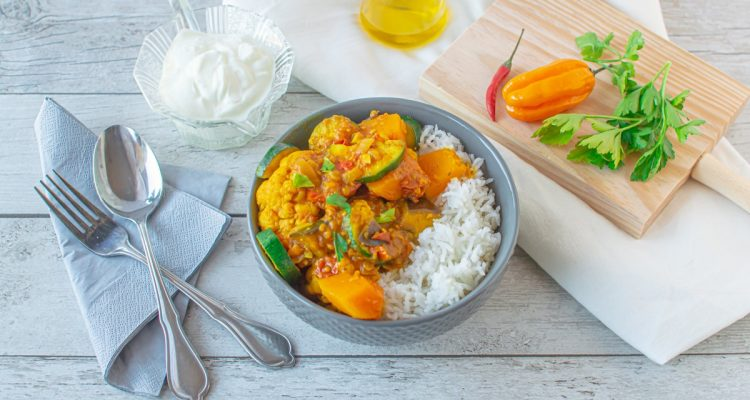

Skvelý mangold so zemiakmi a grilovaná ryba
... nechajte sa unášať na vlnách dovolenkových chutí
Ingrediencie
Pre 4 osoby:
- 500 g čerstvého mangoldu
- 4 väčšie zemiaky
- 2 strúčiky cesnaku
- 2 cibule
- soľ
- mleté čierne korenie
- olivový olej
Tip: Ak máte radi pikantné, môžete do panvice pridať aj štipku mletého čili.

Ak ste na dovolenke v Chorvátsku neochutnali alebo nestihli ochutnať „blitvu s krumpirom“ čiže mangold so zemiakmi, tak nabudúce tak určite urobte, alebo si túto typickú chorvátsku špecialitu pripravte doma.
Mangold so závanom chorvátskeho mora
Mangold je špenátu podobná listová zelenina, je nenáročný na pestovanie a mnohostranne využiteľný v kuchyni. Výborný je dusený ako špenát, alebo ako plnka do slaných koláčov, ako príloha, alebo ho môžete rozmixovať v chutných smoothies. Pripomente si dovolenku v chorvátsku spolu s našim receptom na originálnu „blitvu s kumpirom“.
Postup
- Zemiaky ošpúpeme a nakrájame na menšie kocky. Mangold umyjeme, stopky oddelíme od zelených listov.
- Listy aj stopky nakrájame na kúsky, stopky dáme spolu so zemiakmi variť do mierne osolenej vody.
- Povaríme ich asi 8-10 minút, potom pridáme na 1 minútku spariť aj listy. Scedíme a necháme odkvapkať.
- Medzitým si cibuľu nasekáme nadrobno, cesnak nakrájame na tenké pláty. Na olivovom oleji opečieme cibuľu do sklovita, pridáme cesnak a spolu chvíľku opekáme.
- Pridáme scedené zemiaky s mangoldom a spolu ešte pár minút miešame na panvici. Zemiaky by sa mali opiecť trošku do chrumkava.
- Blitva najlepšie chutí ako príloha ku grilovanej rybe, ale môžete si ju dať len tak, samotnú.
Súvisiace recepty

Morčacia roláda so špenátom a hráškovým pyré
Čas prípravy: 75 min
Čas varenia: 60 min

Bravčová panenka s bylinkovým maslom
Čas prípravy: 45 min
Čas varenia: 30 min

Pečené jahňacie kotlety na jarný stôl
Čas prípravy: 60 min
Čas varenia: 45 min

Zeleninové kari s karfiólom a ryžou
Čas prípravy: 45 min
Čas varenia: 30 min
Morčacia roláda so špenátom a hráškovým pyré
Čas prípravy: 75 min
Čas varenia: 60 min
Bravčová panenka s bylinkovým maslom
Čas prípravy: 45 min
Čas varenia: 30 min
Pečené jahňacie kotlety na jarný stôl
Čas prípravy: 60 min
Čas varenia: 45 min
Zeleninové kari s karfiólom a ryžou
Čas prípravy: 45 min
Čas varenia: 30 min
prev
next
prev
next